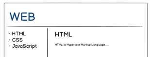
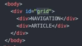
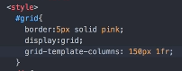
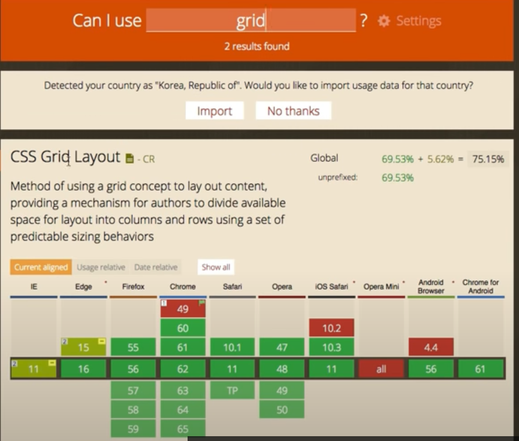
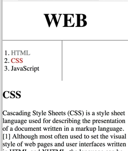

1. 그리드의 기본 사용법
박스모델에서 웹페이지에 줄을 그어보았다.
이번에는 아래 그림처럼 목록과 본문이 나란히 위치하는 디자인을 해본다.
그 방법에는 여러 가지가 있는데 최신의 방법인 그리드를 사용해본다.

이를 위해서 디자인만을 위해 사용하는 태그를 쓴다.
① div - block level element
② span - inline element
목적에 따라서 둘 중 선택한다.
오늘은 div를 사용할 것이다.
연습으로 NAVIGATION과 ARTICLE 두 가지 글자를
각각 div 태그로 묶어준다.
이 두 태그를 나란히 놓으려면
이 두 태그를 다시한번 div라는 부모 태그로 감싸줘야 한다.
부모 div 태그에 grid라는 id를 주었다.

CSS로 id가 grid인 태그에 display:grid 속성을 추가하고
왼쪽은 150px, 나머지는 오른쪽이 다 차지하도록 설정한다.

cf) 1fr 1fr로 하면 두 태그가 화면 가로를 1:1로 차지한다.
1fr 2fr로 하면 두 태그가 화면 가로를 1:2로 차지한다.
※grid처럼 CSS나 HTML 또는 JavaScript의 최신 기술을 사용하려면
현재 웹브라우저들이 얼마나 그 기술을 채택하고 있는지 확인해볼 필요가 있다.
caniuse.com에서 그 통계자료를 제공한다.

2. 그리드 써먹기
다음 그림과 같은 웹페이지에서
ol태그와 h2+p태그를 나란히 놓아보자.

먼저 h2+p 태그를 div로 묶어주고,
그것과 ol 태그를 다시 한번 div(부모 태그)로 묶어주고
부모 div 태그의 id를 grid로 지정해준다.
head의 style 안에 다음과 같이 써준다.
#grid{
display: grid;
grid-template-columns: 150px 1fr;
}
※ row는 행, column은 열이다.
검사 - 개발자 도구에서 박스 모델을 조정해준다.
※ 각 부분의 숫자를 더블클릭하고 키보드 위/아래 키를 누르면 크기를 조정해볼 수 있다.
#grid ol{ padding-left:33px; }
#grid #article{ padding-left:25px; }
※ 본문에 다른 ol태그가 있을 수도 있으므로 앞에 #grid를 추가했다.
article은 id값이므로 굳이 #grid를 추가할 필요는 없지만,
의미를 좀더 분명히 하기 위해서 붙였다.